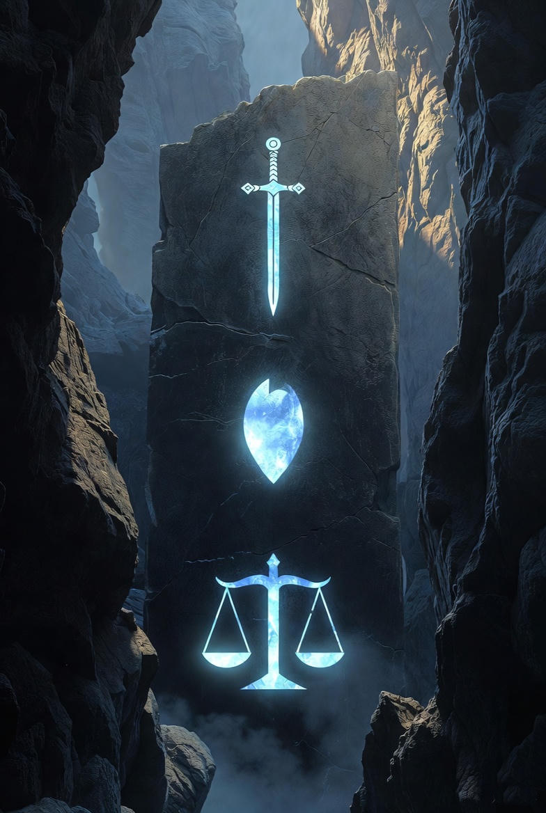
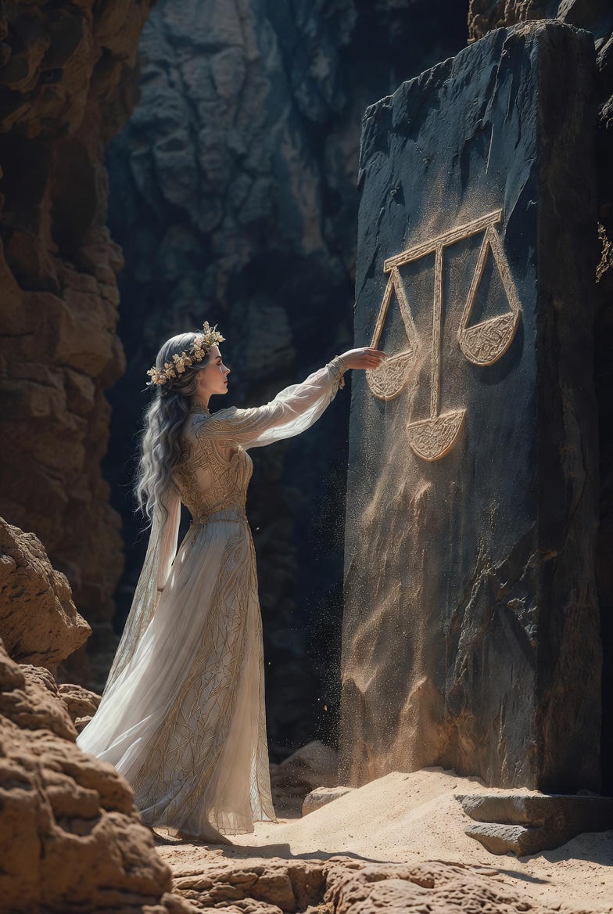
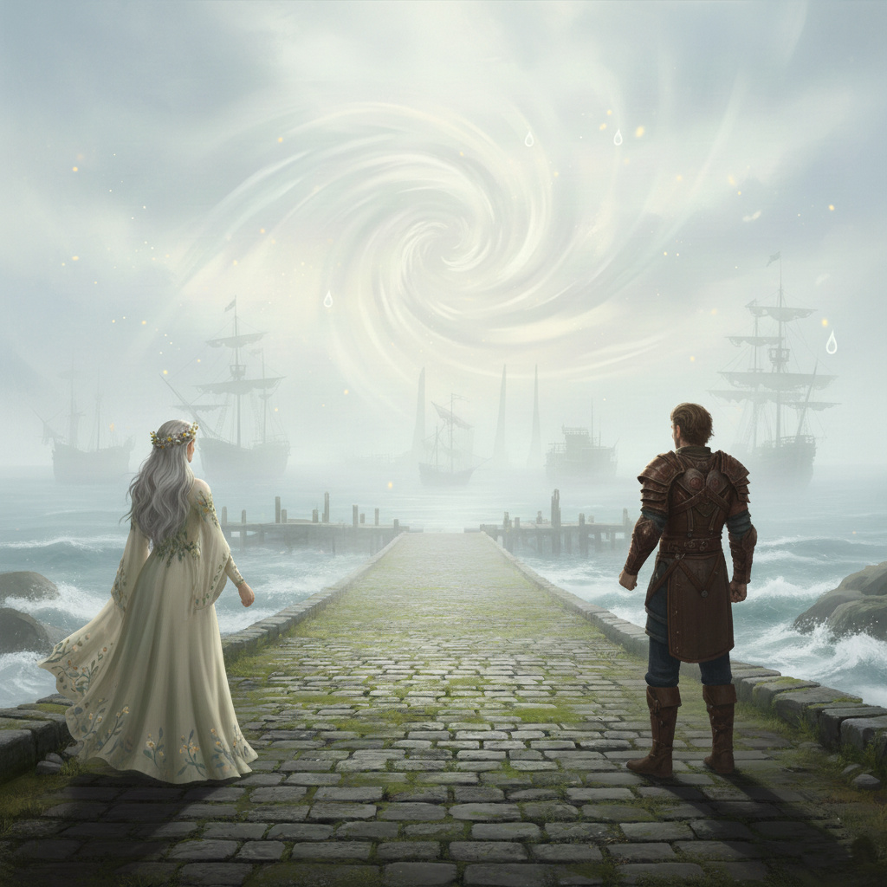

Ajánlom egy kedves barátomnak, aki keresi a pillanatban rejlő örökkévalóságot, és mer hinni a szív órájának szavában.
Ahogy maguk mögött hagyták a köddé vált kunyhókat, az út egy keskeny sziklahídhoz vezetett, amely alatt feneketlen mélység tátongott. Alerion megállt, és megtörölte a homlokát. A győzelem íze édes volt, de a felismerés még annál is fontosabb.
– Honóra – szólalt meg a lovag, miközben a távolban már felsejlettek a Ködös Kikötő első lámpásai –, eddig azt hittem, a tőröm és a bátorságom elég lesz. Azt hittem, ha elég erősen szeretlek, az minden kaput kinyit. De ott, a két alak előtt... a szívem hevesen vert, mégis a fejemnek kellett hidegnek maradnia.
Honóra bólintott, és az ujjait végighúzta a híd korlátján, ami jégkristályokból font láncnak tűnt. – A szeretet a tűz, Alerion, ami hajt minket. De az ész a lámpás, ami mederben tartja a fényt. Az Időfaló ellen a szíved győzött, mert ő érzelmekkel támadott. De ez az útvesztő, ahol most járunk, nem a félelmünkre kíváncsi, hanem a tisztánlátásunkra.
A híd közepén egy újabb akadály várt rájuk: egy láthatatlan fal, amely csak akkor vált láthatóvá, ha megérintették. Ekkor egy mély, zengő hang szólalt meg a semmiből:
„A szív dobbanása méri az időt, de az elme határozza meg az irányt. Aki csak érez, eltéved az álmokban. Aki csak gondolkodik, megfagy a magányban. Hozzátok meg az egyensúly áldozatát!”
A falon három rúnajel gyúlt ki. A Kard az Erőt jelképezte, a Könnycsepp az Érzelmet, a Mérleg a Logikát.
– Mit kell tennünk? – kérdezte Alerion, kezét a tőre markolatára téve.
– Semmiképp sem harcolni – válaszolta Honóra, és szemei élesebben ragyogtak, mint bármikor. – Nézd a mérleget! Nem azt kéri, hogy dobjuk el a szívünket, hanem hogy mérjük hozzá az eszünket. Az Időfaló tornyában a szenvedélyed mentett meg. Porig falujában az én áldozatom tartott meg minket. De az elágazásnál a te logikád nyitotta meg az utat.
Honóra ekkor elővette a Porig falujából kapott bűvös homokot, és egy keveset a Mérleg rúnájára szórt. A homokszemek nem hullottak le, hanem táncolni kezdtek, és egy mondattá álltak össze a levegőben: „Az ész a szív őre.”
Alerion megértette. Odalépett a falhoz, és nem a fegyverét, hanem a kezét nyújtotta. – Nem elég akarni a célt, látni is kell az utat. Nem elég érezni az igazságot, bizonyítani is kell azt.
Ebben a pillanatban a láthatatlan fal elpárolgott. Az út megnyílt, és a távolból sós tengerillat csapott meg őket. A Ködös Kikötő már nem csak egy látomás volt, hanem a valóság.
– Látod? – suttogta Alerion. – A hitünk vitt előre, de a felismerésünk szabadított fel. Most már tudom: a legélesebb fegyverem nem az acél, hanem az a csendes pillanat, amikor megállok és gondolkodom, mielőtt cselekednék.
Honóra átkarolta a lovag karját. – Akkor induljunk. A Kikötőben már várnak a hajók, de ott a köd nem csak a szemet, hanem az elmét is el akarja majd homályosítani. Szükségünk lesz a te éles látásodra.